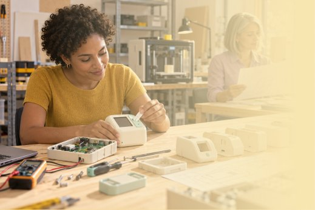
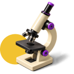
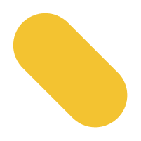

Ciencia validada
Conocimiento reconocido a nivel internacional, no una apuesta aislada.
Cómo evaluamos →
Invertimos en compañías de base científica y financiamos lo que les falta para llegar al mercado: una tecnología madura y una compañía lista para firmar.
En Latinoamérica hay ciencia de nivel mundial que no llega al mercado. Lo que falta es capital paciente, estructura empresarial y un puente hacia la industria. Numancia invierte en ese espacio.



Llevar la tecnología del laboratorio al punto en que un socio industrial o un inversor pueda evaluarla y comprarla.

Construir la compañía que va a ser dueña de esa tecnología, lista para la próxima ronda, licencia o alianza.
Así el riesgo baja de forma visible para todos.

Conocimiento reconocido a nivel internacional, no una apuesta aislada.
Cómo evaluamos →
Como base productiva, mercado de aplicación o acceso a recursos y talento.
Dónde estamos →
Grande para crecer en serio, con un camino claro: licencia, servicios, producto o alianza.
Áreas de interés →
“ Un buen científico frente a un problema real, antes que un buen pitch ”


Tecnologías que mejoran la salud y el bienestar
una terapia, un mejor tratamiento de heridas, un diagnóstico más temprano, un alimento más sano o un dispositivo que simplifica un tratamiento.


Tecnologías que aprovechan mejor los recursos naturales
un cultivo más resistente, una pesca más eficiente, una minería con menos impacto o un insumo que agrega valor.

Asesores que ayudan a evaluar compañías y, cuando hace falta, acompañan desde el directorio.

Acceso a socios industriales e internacionales y a instituciones científicas.

Subsidios y programas públicos que suman sin ceder participación.
Latinoamérica produce ciencia de primer nivel que pocas veces llega al mercado. Estamos donde esa ciencia ocurre, de Ciudad de México a Buenos Aires.
Una charla para entender el problema. No hace falta un plan de negocios.
Científicos revisan los datos; en paralelo, el mercado. Devolvemos lo que vimos.
Hitos para los dos objetivos y el instrumento adecuado.
Capital contra hitos, con asesores, red y fondos no dilutivos.
Lista para una ronda, una licencia o una alianza.
Contanos qué problema resuelve tu tecnología y en qué punto está.
Presentar un proyecto → B· Para inversoresConocé la tesis, la estructura del fondo y cómo participar.
Hablar con el equipo →